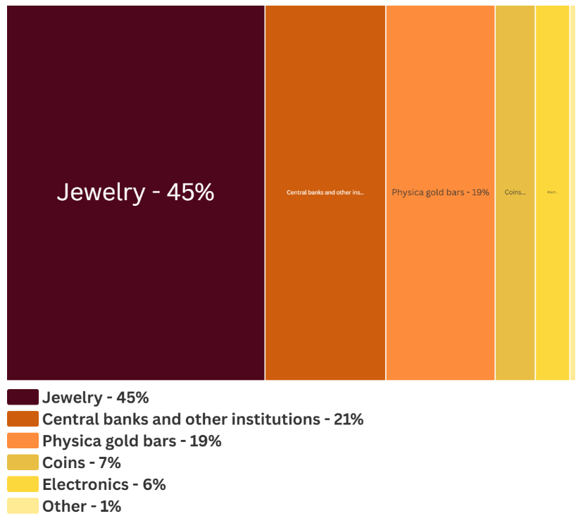

Gold is a transition metal that occurs naturally as small grains of pure metal. Gold remains pristine with time as it does not tend to oxidize. Gold was first smelted in ancient Egypt as far back as 3600 BC for metal work and currency. Gold coins first appeared in Türkiye in 600 BC. Gold was a steadfast backer of global currencies up until 1971, after US President Richard Nixon delinked gold from global currencies.
In the mid and late 1800s, US Gold Rushes, the discovery of gold that can be panned from sand deposits, in California, Nevada then Alaska encouraged mass migration. Similar rushes also occurred in Canada, Australia, and South Africa.
Placer Mining and Mercury Retorting
Placer mining is used to recover gold from loose sediments like sand and gravel along riverbeds. As the ore is already loose, explosives aren’t used to release the ore from the Earth. Instead, placer mining is a form of surface mining that uses a combination of dredging and suction to extract ore from the riverbed. The recovered gold ore is crushed then ground into a fine powder that is mixed with liquid mercury. This mixture forms an alloy called amalgam. In a process called retorting, mercury is boiled off to isolate gold particles and then condensed back to liquid, reducing the emittance of dangerous, toxic vapor. Although industrial scale mercury retorting ceased in the 1960s, smaller mines with less oversight may employ this process to recover gold.
Hard Rock Mining and Recovering of Gold Concentrate
Today most gold is mined from hard rock, hence the name “Hard rock mining”. Herein gold is encased in complex mineral structures of quartz and or sulfide minerals like pyrite. These hard rocks can be drilled and exploded during open-pit mining on the Earth’s surface and during underground mining operations in excavated tunnels and shafts. Both processes use explosives to loosen the gold-containing minerals so that they can be excavated and transported for further processing.
The loose gold ore is ground and then milled into a fine particle size. The fine particles are separated from larger ones in a cyclone. Cyclones use centrifugal force to make heavier particles settle at the bottom so they can be milled for longer. Finer particles are subsequently recovered and sent to thickening units. Thickening units filter out the liquid from this milled slurry. The dewatered slurry is pumped into agitated tanks where cyanide diluted in lime (Ca(OH)2 is mixed into the slurry. The solid gold particles dissolve into the cyanide solution. The concentrate is passed through an activated carbon adsorption unit. The carbon adsorbs the cyanide-gold complexes from the concentrate. The carbon-cyanide-gold complex is treated with acid to remove calcium (and sometimes copper) impurities. The product is sent to an elution column, where a heated cyanide and caustic soda (sodium hydroxide) solution strips the gold from the carbon so that as hot water is subsequently pumped through the column, eluate - rich in gold - is recovered.
Gold Refining: Making the Gold Bars
Eluate is then sent to electrowinning units. Electrowinning is the process of passing current through a solution to cause dissolved metals to precipitate out onto a substrate. So, in this process, the gold in the eluate is made to plate onto a steel mesh. The gold can be separated from the iron in one of two ways. First, caustic acid like hydrochloric or sulfuric acid can be used to dissolve the steel, to leave a gold sludge behind. Or, the gold-iron mix can be smelted which oxidizes the steel, transforming it into a slag that can be removed while the molten gold can be poured into bars.
These bars are not 99.99% pure gold, so they are shipped to another refinery. The refinery purifies with two major processes. The first is the Miller Process where chlorine gas is made to bubble through the bars which were heated to a molten state. The gold, which is a remarkable inert metal, is left intact while the residual impurities: silver, copper, zinc form chloride salts, a low-density slag, that is separated away. From here the gold bar has a 99.5% purity. These bars then undergo the Wohlwill Process, an electrolysis process where electric current is passed through an electrolyte solution of hydrochloric acid and gold chloride. During which the gold from the Miller Process dissolves and migrates to a titanium substrate. Any impurities are left to settle at the bottom of the tank. When all the gold plates onto the new substrate, it is removed either through simply prying the gold block off the titanium, chemical stripping methods that dissolve the contact layer or through pressure washing. The recovered gold is melted and cast once more into the classic gold bar. It is from these refinery plants the gold is sold to investment institutions like central banks.
Some of the largest mines occur in South Africa and the United States. the deepest underground gold mine is in South Africa, with a depth of 3.9km (12,800 ft)! The largest gold mine operation is in Nevada, the driest state in the US. Nevada is also the richest region of gold deposits in the US. Although many of these deposits formed in the Paleozoic era, the Carlin gold deposit was discovered in 1907 by the Newmont Mining Corporation. The deposit is comprised mainly of pyrite in sedimentary rocks. The deposit has been extracted through what is considered the world’s largest gold mining operation: Nevada Goldmines LLC in Elko, Nevada oversees a total of 10 open-pit mines, 9 underground operations, 8 heap leach facilities, 3 oxide plants, 1 flotation plant, 2 autoclave facilities, and 2 roaster facilities. In 2024, their operations contributed $2.9 billion to the Nevada economy.
What is gold used for?

Figure 1: Industrial uses of gold. Data source: USGS National Minerals Information Center, 2025.
What do some gold minerals look like?

Figure 2: Different types of gold containing materials.
Where are gold mineral deposits?

Figure 3: Global gold reserves as reported by the USGS. Data is from https://mrdata.usgs.gov/general/map-global.html
Where is gold mined?
Scroll with your mouse or touchpad over the tagged locations on the map to zoom in/out.
Who imports gold?
Click on the blue bubbles to see where gold is imported from.